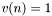
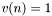
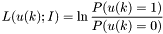
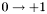
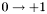
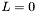

Soft Input Soft Output modules for turbo reception
- Version:
- 2.0
Description
C++ class implementing Soft Input Soft Output (SISO) modules for turbo reception using IT++ library.Within the SISO class, the following SISO modules are implemented:
- decoder for Recursive Systematic Convolutional (RSC) codes
- decoder for Non-recursive non-Systematic Convolutional (NSC) codes
- equalizer for multipath channels (without and with precoding)
- descrambler for Interleave Division Multiple Access (IDMA) systems
- Multi User Detectors (MUDs) for IDMA systems (without and with precoding)
- demappers for Bit Interleaved Coded Modulation (BICM) systems and Space Time (ST) BICM systems
The EXtrinsic Information Transfer (EXIT) chart [11] of turbo receivers based on SISO modules can be obtained using the EXIT class.
Generic SISO module
A generic SISO module has as inputs intrinsic and a priori informations and as outputs extrinsic informations [1].

Generic SISO module
![\[ L(v(n);I) = \ln \frac{p(y(n)/v(n)=1)}{p(y(n)/v(n)=0)} \]](form_0.png)
where  is the probability density of the received symbol (e.g. BPSK modulated),
is the probability density of the received symbol (e.g. BPSK modulated),  , knowing the coded bit, .
, knowing the coded bit, .
The a priori information of data bits is defined as:

where  is the a priori probability of the data bit,
is the a priori probability of the data bit,  . The relationship between the data bits,
. The relationship between the data bits,  , and the coded bits,
, and the coded bits,  , defines the coding algorithm (e.g. convolutional coding, multipath propagation, symbol mapping, space-time coding, etc.).
, defines the coding algorithm (e.g. convolutional coding, multipath propagation, symbol mapping, space-time coding, etc.).
The extrinsic information of coded bits is defined as:
![\[ L(v(n);O) = \Lambda(v(n))-L(v(n);I) \]](form_9.png)
where  is the Logarithm of Likelihood Ratio (LLR) of coded bits.
is the Logarithm of Likelihood Ratio (LLR) of coded bits.
The extrinsic information of data bits is defined as:
![\[ L(u(k);O) = \Lambda(u(k))-L(u(k);I) \]](form_11.png)
where  is the LLR of data bits.
is the LLR of data bits.
Both LLRs, and , are computed using the Maximum A Posteriori (MAP) algorithm or some simplified version of it.
At the last iteration of the turbo reception algorithm, data bits can be recovered from the LLR of data bits:
![\[ \tilde{u}(k) = 1\textrm{ if }\Lambda(u(k))\geq 0 \]](form_13.png)
Detailed description of SISO modules
- decoder for RSC codes

SISO RSC module
 . The following algorithms are implemented:
. The following algorithms are implemented:- log MAP [2]
- max log MAP
- Soft Output Viterbi Algorithm (SOVA) [12]
- Viterbi-based soft output algorithm [13]
The trellis describing the RSC code must begin in zero state. The trellis can end in zero state (tail bits must be added to input data bits of the RSC code) or in an unknown state (no tail bits needed).
When the BPSK modulated received symbols, , are fed to the SISO RSC module input, the intrinsic information of data and parity bits has the expression:
![\[L(v(n);I) = -\frac{2}{\sigma^2}y(n)\]](form_15.png)
, where  is the variance of the Additive White Gaussian Noise (AWGN). The sign minus in the above expression comes from the way the BPSK mapping is done:  and
is the variance of the Additive White Gaussian Noise (AWGN). The sign minus in the above expression comes from the way the BPSK mapping is done:  and  .
.
For an usage example see Parallel Concatenated Convolutional Codes.

SISO NSC module
 , where
, where  is the number of outputs of the NSC code. Optionally, a scrambler can be used at the NSC code output in order to lower the coding rate. In this case, the SISO NSC module is used for decoding both the NSC code and the scrambler. The MAP algorithm (log MAP and max log MAP) is used [3]. The trellis must have the same properties as for the RSC codes.
is the number of outputs of the NSC code. Optionally, a scrambler can be used at the NSC code output in order to lower the coding rate. In this case, the SISO NSC module is used for decoding both the NSC code and the scrambler. The MAP algorithm (log MAP and max log MAP) is used [3]. The trellis must have the same properties as for the RSC codes.For an usage example see Serial Concatenated Convolutional Codes or Interleave Division Multiple Access.
- equalizer for multipath channels

SISO equalizer module
 . The channel order must be at least
. The channel order must be at least  (
( multipaths). The channel inputs are BPSK modulated symbols ( and ).
multipaths). The channel inputs are BPSK modulated symbols ( and ).In this case the general model of the SISO module is not followed and the received signal is directly used as one input of the SISO module (instead of the intrinsic information). The second input is represented by the a priori information of input symbols. There is a single output represented by the extrinsic information of input symbols.
A precoder can be used at the channel input in order to obtain a recursive equivalent channel. When a precoder is used, the channel order can be at least  (one path).
The MAP algorithm (log MAP and max log MAP) is implemented according to [4]. The channel trellis must begin in zero state (that is the channel cases must be filled with  ). The channel trellis can end in zero state or in an unknown state.
). The channel trellis can end in zero state or in an unknown state.
For an usage example see Turbo equalizer.
- descrambler for IDMA systems
SISO descrambler module
For an usage example see Interleave Division Multiple Access.

SISO MUD module
The multipath channels from all users are seen as a code with multiple inputs and single output (MISO). The channel inputs are BPSK modulated symbols ( and ) and the channel coefficients are real numbers.
The following algorithms are implemented:
When the max log MAP algorithm is used, the channel trellis must begin in zero state (that is the channel cases of each users must be filled with ) and can end in zero state or in an unknown state. When the GCD and the simplified GCD are used, a zero padding technique must be used in order to eliminate the interblock interference (a block is defined by the interleaver length) [7].
The max log MAP algorithm can be used when a precoder is used at each channel input, in order to obtain recursive equivalent channels.
For an usage example see Interleave Division Multiple Access.
- demapper for BICM and ST-BICM

SISO demapper module
The channel must be flat-fading, represented by a single complex attenuation at each time instant. The channel inputs are complex symbols from a Quadrature Amplitude Modulated (QAM) constellation. The constellation must be quadratic.
The SISO demapper for BICM implements the following algorithms [8]:
- log MAP algorithm
- max log MAP algorithm
and in the SISO demapper for ST-BICM the following algorithms are implemented [9]:
- log MAP and max log MAP algorithm adapted for ST block codes
- max log MAP algorithm adapted for Alamouti code (much lower complexity than the max log MAP algorithm for ST block codes)
- Gaussian Approximation (GA)
- simplified GA
- Minimum Mean Squared Error (MMSE) Parallel Interferrence Canceller (PIC)
- Zero Forcing (ZF) PIC
The ST block codes are implemented using the model proposed in [10] (see STC class). Further, all algorithms implemented in the SISO demapper for ST-BICM use an equivalent channel model with real coefficients including the ST block code and the Multiple Input Multiple Output (MIMO) channel [10].
For an usage example see Bit Interleaved Coded Modulation or Space Time Bit Interleaved Coded Modulation.
References
[1] S. Benedetto, D. Divsalar, G. Motorsi, and F. Pollara, ''A Soft-Input Soft-Output Maximum A Posteriori (MAP) Module to Decode Parallel and Serial Concatenated Codes,`` TDA Progress Report 42-127, November 1996.[2] Steven S. Pietrobon and Adrian S. Barbulescu, ''A simplification of the modified Bahl decoding algorithm for systematic convolutional codes``, Proc. ISITA, 1994
[3] L. R. Bahl, J. Cocke, F. Jelinek, and J. Raviv, ''Optimal decoding of linear codes for minimizing symbol error rate,`` IEEE Transactions on Information Theory, pp. 284-287, Mar. 1974
[4] R. Koetter, A. C. Singer, and M. Tuchler, ''Turbo equalization: an iterative equalization and decoding technique for coded data transmision,`` IEEE Signal Processing Magazine, pp. 67-80, Jan. 2004
[5] R. H. Mahadevappa and J. G. Proakis, ''Mitigating multiple access interference and intersymbol interference in uncoded CDMA systems with chip-level interleaving,`` IEEE Transactions on Wireless Communications, pp. 781-792, Oct. 2002
[6] L. Liu and L. Ping, ''Iterative detection of chip interleaved CDMA systems in multipath channels,`` Electronics letters, vol. 40, pp. 884-886, July 2004.
[7] Z. Wang and G. B. Giannakis, ''Wireless multicarrier communications: where Fourier meets Shannon,`` IEEE Signal Processing Magazine, pp. 29-48, May 2000
[8] A. Tonello, ''Space-time bit-interleaved coded modulation with an iterative decoding strategy,`` in Vehicular Technology Conference, vol. 1, pp. 473-478 vol.1, 2000
[9] B. Cristea, ''Turbo receivers for Space-Time BICM``, technical report
[10] B. Hassibi and B. M. Hochwald, ''High-rate codes that are linear in space and time,`` IEEE Transactions on Information Theory, vol. 48, pp. 1804-1824, July 2002
[11] S. ten Brink, ''Convergence behavior of iteratively decoded parallel concatenated codes,`` IEEE Transactions on Communications, vol. 49, pp. 1727-1737, Oct. 2001
[12] J. Hagenauer and P. Hoeher, ''A Viterbi algorithm with soft-decision outputs and its applications,`` in Global Telecommunications Conference, 1989
[13] M. Kerner and O. Amrani, ''Iterative Decoding Using Optimum Soft Input - Hard Output Module,`` in: IEEE Transactions on Communications, vol. 57, no. 7, July 2009, pp. 1881-1885